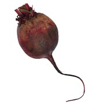
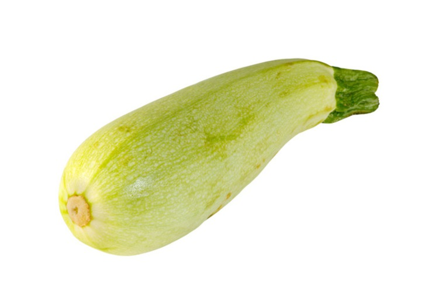

Баклажан многолетние травянистое растений. Известен также под названием бадриджан или синенькие.
Родиной баклажанов являются тропические районы Индии, где они растут в диком виде.
Как однолетнюю культуру в Европе баклажаны выращивают с XIII-XV веков.

Свекла - двулетнее растение семейства маревых, корнеплодная овощная культура.
Ее родина - Средиземноморье.
Как ни странно, человек сначала оценил вкус свекольных листьев и
уж затем распробовал корнеплоды свеклы.
С давних времен ее используют при цинге и для профилактики авитаминозов.
Полезно использовать в пищу и ботву свеклы, в которой много аскорбиновой кислоты и каротина.

Плоды кабачка имеют продолговатую форму зелёного, жёлтого или белого цвета.
Мякоть кабачка легко усваивается организмом, не
вызывая раздражения желудка и кишечника, оказывая
стимулирующее влияние на функцию последнего. В
кабачке содержится витамин С, участвующий в выработке
коллагена, оказывающего благотворное воздействие на кожу.
Витамин А, который также содержится в кабачках, полезен для зубов и волос,
хорошо влияет на зрение.
Так же в нем присутствуют важные для организма
микроэлементы, калий, кальций, железо, магний -
необходимые сердцу, мозгу, мышцам, и печени.

Капуста белокочанная – это двухлетний, светолюбивый
овощ, имеющий круглую форму с плотно завернутыми вовнутрь листьями.
Однозначно определить, откуда родом белокочанная капуста ученным не удается до сих пор.
Существует две точки зрения.
В соответствии с одной, родиной капусты считается побережье Средиземного моря,
с другой - Колхидская низменность на территории Грузии.
Сорта белокочанной капусты различаются по времени созревания, размерам головки,
срокам хранения и насчитывается их несколько десятков.
Ранние сорта долго не хранятся и должны быть использованы в первую очередь.
Поздние же виды капусты могут сохраняться в
проветриваемых, темных и прохладных (0-2°С) погребах
при влажности не более 95% до следующего урожая.
Повышение влажности и температуры может привести к гниению овоща.